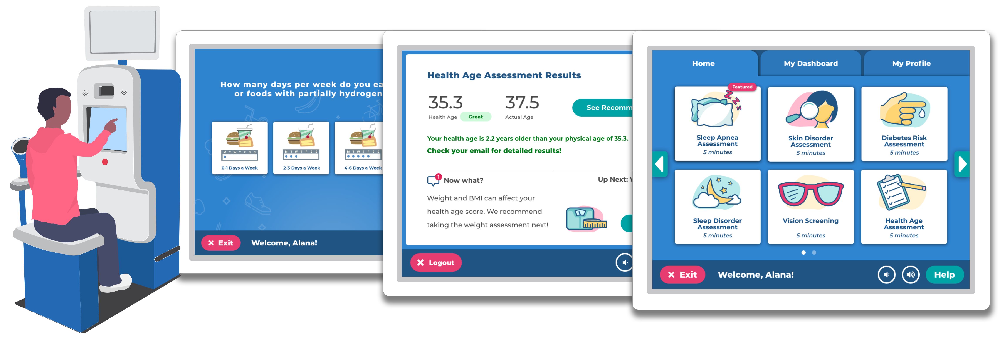

The opportunity
Minorities, low-income, and rural populations are the most difficult groups to reach in healthcare — yet they dominate overall healthcare spend. The Pursuant Health kiosk provides a free health resource within 10 miles of 79% of the US population.

Design & development
Collaborating with Dr Michael Roizen and the Cleveland Clinic Wellness team, we designed the NCQA-certified Health Age assessment — following established HRA standards with a proprietary algorithm for calculating Health Age.

Usability testing
Ten participants (ages 27–79) completed a pre-study survey, user scenario evaluation, and post-study survey at two Atlanta Walmart locations.

- 70% rated tasks as "very easy"
- 100% task success on core actions
- 80% planned to include the kiosk in their regular healthcare routine
Health outcomes
- Tobacco cessation: 84% of active participants quit smoking
- Weight loss: Average 21.1 lbs, BMI reduction of 2 points
- Stress: 30% reduction in perceived stress
- Sleep: 41% decrease in PIRS score
NCQA certified in Wellness & Health Promotion — March 2016. Kiosks with the new UI consistently showed more tests taken, more logged-in users, and higher average sessions.